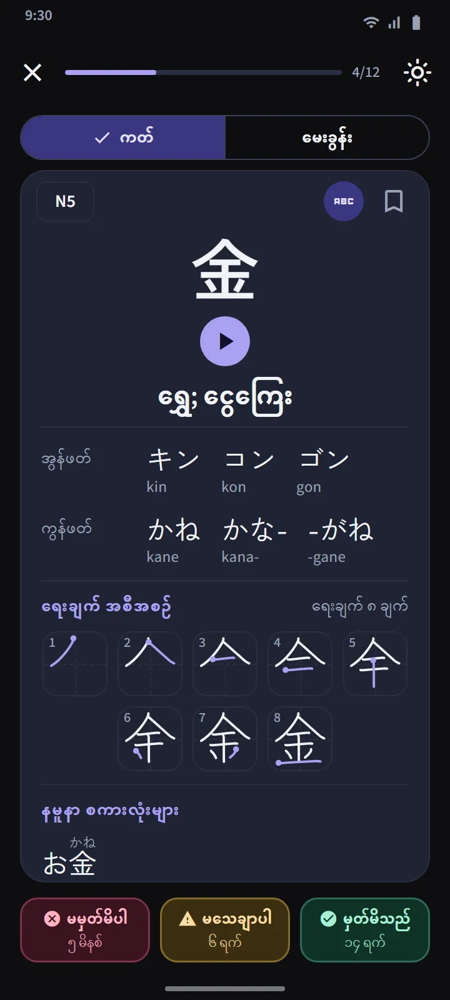

ဂျပန်ကျောင်းသင်ရိုး အစီအစဉ်အတိုင်း ခန်းဂျီး 25 လုံးစီ အစုများ
ခန်းဂျီး တက်ဘ်ကို JLPT အဆင့်အလိုက် ခွဲပြီး ခန်းဂျီး 25 လုံးခန့်စီ အစုများအဖြစ် ထပ်ခွဲထားသည်။ အဆင့်တစ်ခုအတွင်း အစီအစဉ်သည် ဂျပန်ကျောင်းသင်ရိုး (တန်း 1 ကို အရင်) အတိုင်းဖြစ်ပြီး ထို့နောက် မျဉ်းအရေအတွက် အနည်းဆုံးမှ တက်သွားသည်။ အတူတကွ ဆက်စပ်နေသော အစီအစဉ်များ (ဥပမာ ဂဏန်းများ၊ ရက်သတ္တပတ်နေ့အမည်များ၊ ရာသီများ) ကို အစဉ်လိုက်ထားသည်။ အစုတစ်ခုစီ၏ အတန်းတွင် ၎င်း၏ ခန်းဂျီးများ၊ တိုးတက်မှုဘား၊ မှတ်မိပြီနှင့် ကျွမ်းကျင်ပြီ အရေအတွက်နှင့် “စစ်ဆေးမှု အဆင်သင့်” အညွှန်း သို့မဟုတ် ပြန်လေ့ကျင့်ရန် ရက်ရောက်နေသော အရေအတွက်ကို ပြသည်။
| အဆင့် | ခန်းဂျီး | အသုံးပြုခွင့် |
|---|---|---|
| N5 | ၁၀၃ | အခမဲ့ |
| N4 | ၁၈၁ | အခမဲ့ |
| N3 | ၃၇၀ | Premium |
| N2 | ၃၆၉ | Premium |
| N1 | ၁,၂၀၇ | Premium |


ခန်းဂျီး ကတ်နှင့် မေးခွန်းများ
ကတ်၏ ရှေ့ဘက်သည် ခန်းဂျီးတစ်လုံးတည်းဖြစ်သည်။ နောက်ဘက်တွင် အဓိပ္ပာယ်များ၊ On နှင့် Kun အဖတ်များ (လိုလျှင် ရိုမာဂျိနှင့်အတူ)၊ မျဉ်းတစ်ကြောင်းလျှင် ပုံတစ်ပုံနှင့် စတင်သည့်နေရာကို အမှတ်အသားပြထားသော ရေးနည်းအစီအစဉ် ပုံ၊ ၎င်းကို သုံးသော ဥပမာ စကားလုံးများ ပါသည်။ ဝေါဟာရကတ်များနှင့် တူသော ခလုတ်သုံးခုက ပြန်စီစဉ်ပေးသည်။
အစုတစ်ခု၏ မေးခွန်းသည် မှတ်မိပြီ သို့မဟုတ် ကျွမ်းကျင်ပြီ ခန်းဂျီး 10 လုံးရှိလျှင် ဖွင့်ပြီး မေးခွန်းအမျိုးအစား သုံးမျိုးရှိသည်- ခန်းဂျီးမှ အဓိပ္ပာယ်၊ အဓိပ္ပာယ်မှ ခန်းဂျီး၊ ခန်းဂျီးမှ အဖတ်။ ကျွမ်းကျင်ပြီ စည်းမျဉ်းလည်း အတူတူပင်- မတူညီသော ရက် 3 ရက် မေးခွန်းတွင် မှန်ရမည်။ တက်ဘ်အပေါ်ဆုံးရှိ ခန်းဂျီး ပြန်လှန်လေ့ကျင့်ရန် က အစုအားလုံးမှ ရက်ရောက်နေသော ခန်းဂျီးအားလုံးကို စုပေးပြီး ရောနှောမေးခွန်းက အစုများကို ကျော်၍ စမ်းသပ်သည်။


ခန်းဂျီး အသေးစိတ်နှင့် အထူးကတ်အစုများ
ခန်းဂျီးတစ်လုံးစီ၏ အသေးစိတ်စာမျက်နှာတွင် ၎င်း၏ အဓိပ္ပာယ်များ၊ အဆင့်နှင့် နောက်ပြန်လေ့ကျင့်ချိန်၊ အဖတ်များ၊ မျဉ်းပုံနှင့် ဥပမာ စကားလုံးများ ပါသည်။ စကားလုံးတစ်လုံး၏ အသေးစိတ်စာမျက်နှာက ၎င်းတွင်ပါသော ခန်းဂျီးများသို့ ချိတ်ဆက်ထားသည်။ ဝေါဟာရကဲ့သို့ ခန်းဂျီးတွင်လည်း မှတ်သားထားသည်၊ ခက်ခဲသော နှင့် 60 စက္ကန့် အမြန်လေ့ကျင့် ကတ်အစုများ ရှိပြီး ပင်မမျက်နှာပြင်၏ အမြန်လေ့ကျင့်ခန်း ပိုင်းရှိ ခလုတ်တစ်ခုက ၎င်း၏ အကွက်လေးခုကို ခန်းဂျီးဗားရှင်းသို့ ပြောင်းပေးသည်။


ခန်းဂျီးကို လက်ချောင်းဖြင့် ရေးပါ
သင် မှတ်မိပြီ သို့မဟုတ် ကျွမ်းကျင်ပြီ ဖြစ်သော ခန်းဂျီးများကို ရေးခြင်းဖြင့် လေ့ကျင့်နိုင်သည်- အဓိပ္ပာယ်နှင့် အဖတ်များကိုသာ ပြပြီး သင်က မျဉ်းတစ်ကြောင်းချင်း ရေးရသည်၊ မျဉ်းတိုင်း၏ ပုံသဏ္ဍာန်၊ ဦးတည်ချက်နှင့် အစဉ်ကို အင်တာနက်မလိုဘဲ စစ်ဆေးပေးသည်။ ပုံစံသုံးမျိုးရှိသည်- မှတ်ဉာဏ်ဖြင့်၊ ပုံရိပ်ဖြင့်၊ နှင့် အစဉ်လိုက် နှိပ်ရန်။ ခန်းဂျီးတစ်လုံးကို မတူညီသော ရက်နှစ်ရက် အကူအညီမရဘဲ မှတ်ဉာဏ်ဖြင့် ရေးနိုင်လျှင် “ရေးတတ်ပြီ” ဟု ရေတွက်သည်။


ဒေတာ ရင်းမြစ်များ
အဓိပ္ပာယ်နှင့် အဖတ်များသည် KANJIDIC (Electronic Dictionary Research and Development Group) မှ၊ ရေးနည်းအစီအစဉ်သည် KanjiVG မှ ဖြစ်ပြီး နှစ်ခုစလုံးသည် CC BY-SA လိုင်စင်များအောက်တွင် ရှိသည်။ ခန်းဂျီးအဆင့်များသည် အဟောင်း JLPT စာရင်းများကို အခြေခံသော ခန့်မှန်းချက်ဖြစ်ပြီး လက်ရှိ JLPT သည် တရားဝင် ခန်းဂျီးစာရင်း မထုတ်ပြန်ပါ။